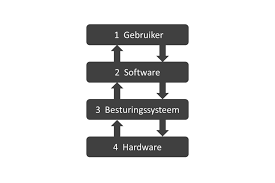
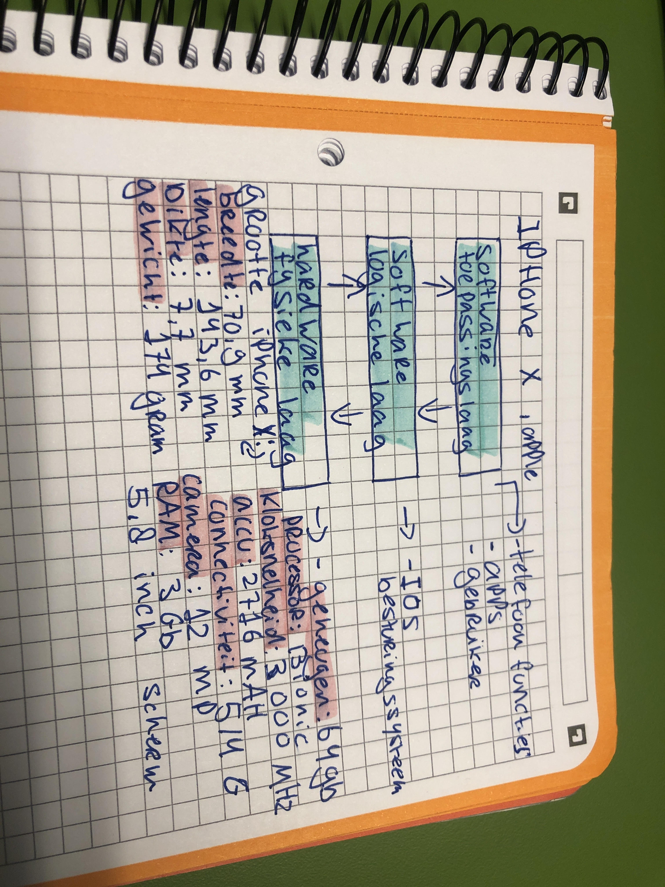

De fysieke laag in de wereld van netwerken vormt eigenlijk het meest essentiële stukje. Hier gaat het om de echte fysieke verbindingen en het verzenden van ruwe data.We hebben het over de hardware, denk aan kabels, switches en netwerkkaarten, die de technische kant van die fysieke verbindingen beheren. Denk maar aan de elektrische signalen, het type kabels dat we gebruiken en hoe de draden precies met elkaar zijn verbonden.
De logische laag in computernetwerken heeft als belangrijke taak om gegevens efficiënt te beheren, te routeren en te laten communiceren tussen verschillende apparaten in het netwerk. Het organiseert en verzendt gegevens op een manier die begrijpelijk is voor de hogere lagen van een netwerk stack. De logische laag speelt een cruciale rol bij het laten werken van een soepele en efficiënte gegevensuitwisseling tussen apparaten in een netwerk, ongeacht hun fysieke locatie of de onderliggende hardware. Het wordt vaak geassocieerd met technologieën zoals IP (Internet Protocol) en routing algoritmen, die bijdragen aan een betrouwbare bezorging van gegevenspakketten, zelfs in complexe netwerkomgevingen. In feite vormt de logische laag de basis van het moderne internet en hedendaagse netwerken zoals we die kennen.
De toepassingslaag, die zich bovenaan het OSI-model bevindt, is het hoogste niveau. Hier vinden we allerlei softwaretoepassingen die via netwerken met elkaar praten, zoals webbrowsers, e-mailclients en apps voor bestandsuitwisseling. Deze laag zorgt ervoor dat we als mensen kunnen communiceren en interageren met computersystemen. Ze neemt gegevens en vertaalt ze in begrijpelijke informatie voor ons. In feite kan je de toepassingslaag zien als de brug tussen gebruikers zoals wijzelf en de onderliggende lagen van het netwerk. Die diepere lagen doen al het technische werk dat we niet echt zien, maar de toepassingslaag maakt het voor ons eenvoudig om gegevens te versturen, te ontvangen en te bekijken op een manier die we snappen. Dus, in gewoon Nederlands, deze laag maakt het mogelijk dat we al onze online dingen kunnen doen zonder ons zorgen te maken over de technische details eronder.
 